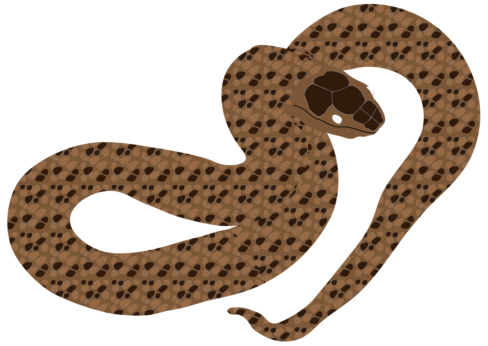
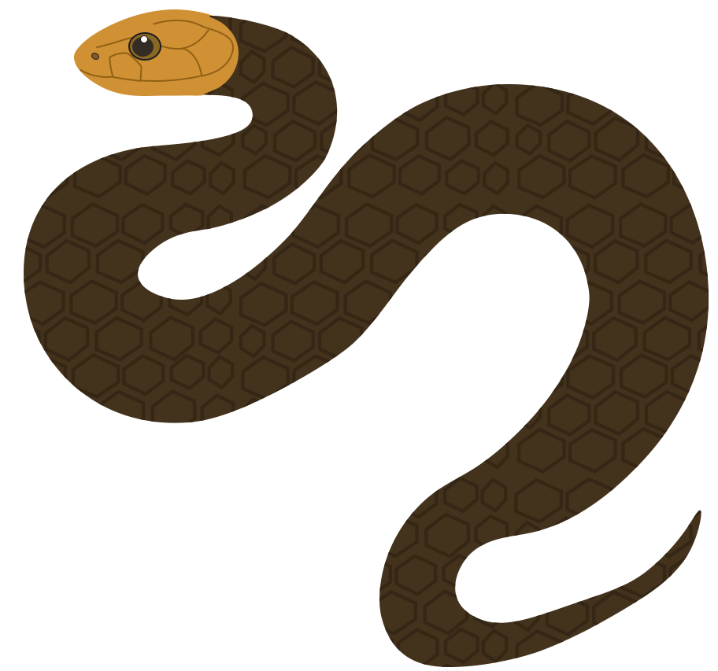

Полоз лісовий Zamenis longissimus
Неотруйна
Червона книга України
Довжина: 140-160 см
Активність: Денна
Ареал: Карпати, Закарпаття
Харчування: Гризуни, птахи
Опис
Полоз лісовий — одна з найбільших змій України. Має струнке, м'язисте тіло та елегантну голову. Забарвлення однотонне, від оливково-бурого до чорного кольору, часто з білуватими цятками на боках. Молоді особини мають світліше забарвлення з темними плямами.


Спосіб життя
- Чудовий деревний лазун
- Активний мисливець, переслідує здобич
- Неагресивний до людини
- Відкладає 6-8 яєць у середині літа
Середовище існування
- Букові та мішані ліси
- Кам'янисті схили з деревною рослинністю
- Старі парки та виноградники
- Лісові галявини та узлісся
Охорона
Вид занесений до Червоної книги України. Основні загрози:
- Вирубка старих лісів
- Браконьєрство
- Загибель на дорогах
- Знищення місць розмноження
Важлива інформація
- Абсолютно безпечний для людини
- Допомагає контролювати чисельність гризунів
- При зустрічі не турбувати і дати можливість втекти
- Заборонено відловлювати та утримувати в неволі